Ocean Mask Edits for tx2_3v2#
For each region, a map of cell ocean area fraction is shown with (i,j) labels to guide editing. Edits to flip land/ocean are entered by hand and the binary mask (0=land, 1=ocean) for the region is then shown. Following all hand edits, a filling algorithm is run to fill inland waters.
Regions are organized by basin within this notebook
import os
import sys
sys.path.insert(0,os.path.abspath('src/'))
from datetime import date
%load_ext autoreload
%autoreload 2
import numpy as np
import xarray as xr
%matplotlib inline
import matplotlib.pyplot as plt
from topo_edit_util import map_mask, mom6_latlon2ij, mask_flood
import warnings
warnings.filterwarnings('ignore')
Input Data Sets#
file_root = 'topo.sub150'
grid = 'tx2_3v2'
topo_data = 'srtm'
edit_no = 4
file_in = file_root + '.' + grid + '.' + topo_data + '.nc'
path = './'
print(path+file_in)
df_old = xr.open_dataset(path+file_in)
file_out = file_root + '.' + grid + '.' + topo_data + '.edit' + '{:d}'.format(edit_no) + '.nc'
print(file_out)
./topo.sub150.tx2_3v2.srtm.nc
topo.sub150.tx2_3v2.srtm.edit4.nc
df_new = df_old.copy()
Original Global Mask#
fig,ax=plt.subplots(figsize=(12,12))
ax.pcolormesh(df_old['geolonb'],df_old['geolatb'],df_old['mask'],vmin=0,vmax=1);
ax.set_xlim(df_old['lonh'][0],df_old['lonh'][0]+180.);
fig,ax=plt.subplots(figsize=(12,12))
ax.pcolormesh(df_old['geolonb'],df_old['geolatb'],df_old['mask'],vmin=0,vmax=1);
ax.set_xlim(df_old['lonh'][0]+180.,df_old['lonh'][0]+360.);
Eastern Atlantic#
Western Baltic / Kattegat#
lonbeg=8
lonend=13
latbeg=53
latend=58
skp = 3
map_mask(df_old,'ocn_frac',lonbeg,lonend,latbeg,latend,skp)
df_new['mask'][387,441] = 1
map_mask(df_new,'mask',lonbeg,lonend,latbeg,latend,skp)
Eastern Baltic / G. of Bothnia#
lonbeg=18
lonend=23
latbeg=57
latend=62
map_mask(df_old,'ocn_frac',lonbeg,lonend,latbeg,latend,skp)
map_mask(df_new,'mask',lonbeg,lonend,latbeg,latend,skp)
G. of Finland#
lonbeg=22
lonend=30.5
latbeg=58
latend=61
map_mask(df_old,'ocn_frac',lonbeg,lonend,latbeg,latend,skp)

map_mask(df_new,'mask',lonbeg,lonend,latbeg,latend,skp)
Jutland#
lonbeg=8
lonend=11
latbeg=55
latend=58
map_mask(df_old,'ocn_frac',lonbeg,lonend,latbeg,latend,skp)
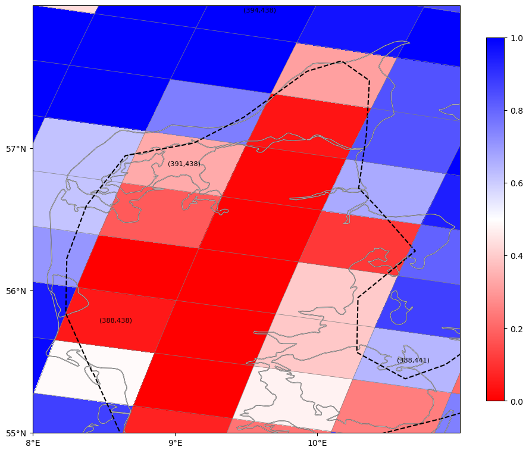
df_new['mask'][390,437]=0
map_mask(df_new,'mask',lonbeg,lonend,latbeg,latend,skp)
Elbe River Delta#
lonbeg=7
lonend=9.5
latbeg=52
latend=56
map_mask(df_old,'ocn_frac',lonbeg,lonend,latbeg,latend,skp)
df_new['mask'][385,439]=0
df_new['mask'][383,440]=0
map_mask(df_new,'mask',lonbeg,lonend,latbeg,latend,skp)
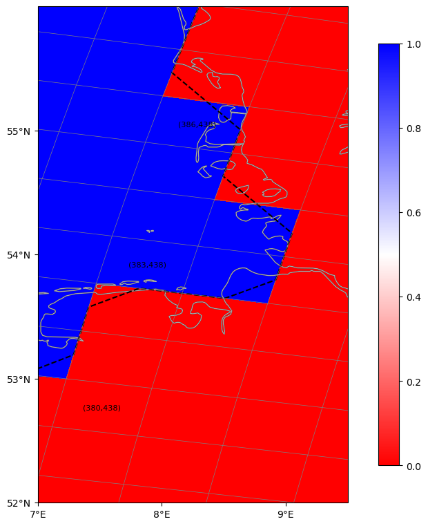
Netherlands / Wadden Sea#
lonbeg=4
lonend=8
latbeg=50
latend=54
map_mask(df_old,'ocn_frac',lonbeg,lonend,latbeg,latend,skp)
df_new['mask'][381:383,437]=0
df_new['mask'][381,436]=0
df_new['mask'][379:382,435]=0
df_new['mask'][377:380,434]=0
map_mask(df_new,'mask',lonbeg,lonend,latbeg,latend,3)
Netherlands / Belgium / English Channel#
lonbeg=0
lonend=5
latbeg=48
latend=53
map_mask(df_old,'ocn_frac',lonbeg,lonend,latbeg,latend,skp)
df_new['mask'][376,433]=0
map_mask(df_new,'mask',lonbeg,lonend,latbeg,latend)
Gibralter#
lonbeg=-8
lonend=-4
latbeg=34
latend=38
map_mask(df_old,'ocn_frac',lonbeg,lonend,latbeg,latend,skp)
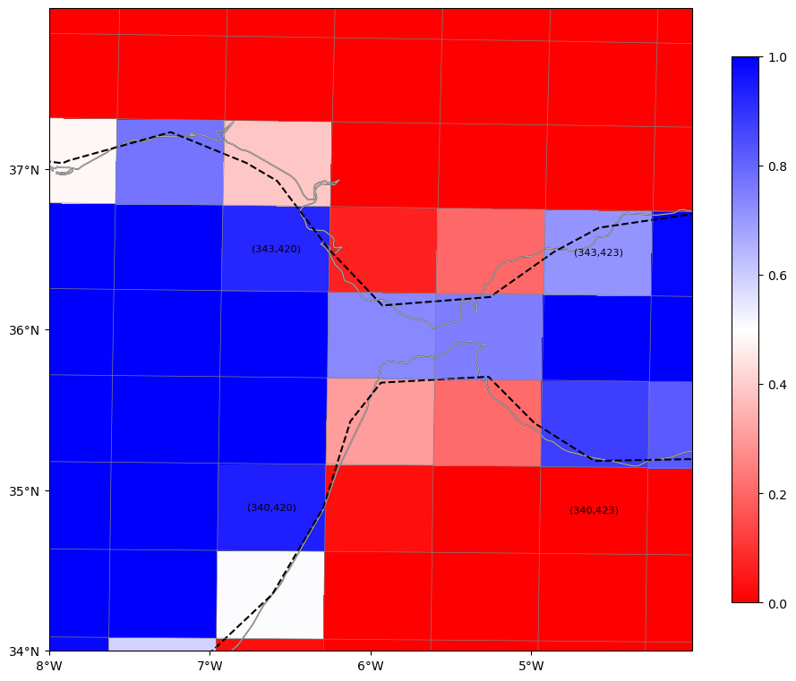
map_mask(df_new,'mask',lonbeg,lonend,latbeg,latend,skp)
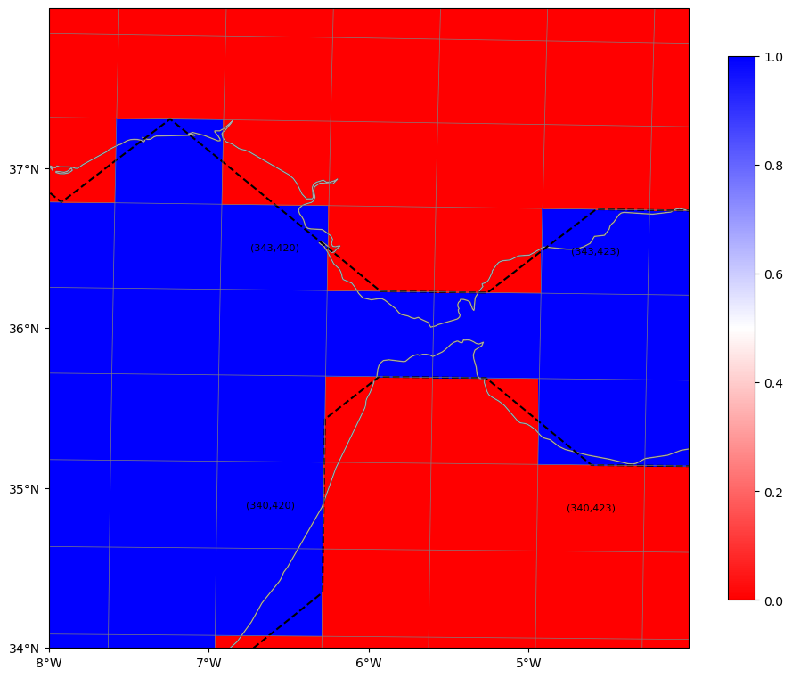
Namibia#
lonbeg=13
lonend=17
latbeg=-26
latend=-22
map_mask(df_old,'ocn_frac',lonbeg,lonend,latbeg,latend,skp)
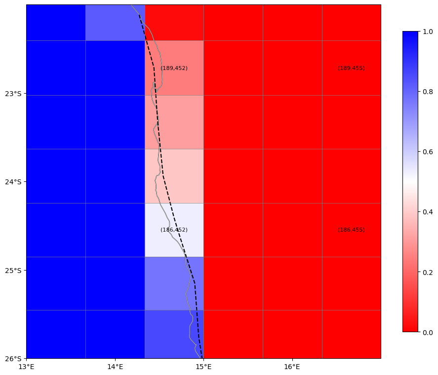
map_mask(df_new,'mask',lonbeg,lonend,latbeg,latend,skp)
Mediterranean#
N. Adriatic#
lonbeg=11
lonend=14
latbeg=43.5
latend=46.
map_mask(df_old,'ocn_frac',lonbeg,lonend,latbeg,latend,skp)
## Po river delta
df_new['mask'][362,447]=0
map_mask(df_new,'mask',lonbeg,lonend,latbeg,latend,3)
Aegean / Cyprus#
lonbeg=22
lonend=30
latbeg=34
latend=41
map_mask(df_old,'ocn_frac',lonbeg,lonend,latbeg,latend,4)
df_new['mask'][342,467]=0
df_new['mask'][341,468]=0
df_new['mask'][353,456]=0
map_mask(df_new,'mask',lonbeg,lonend,latbeg,latend,4)
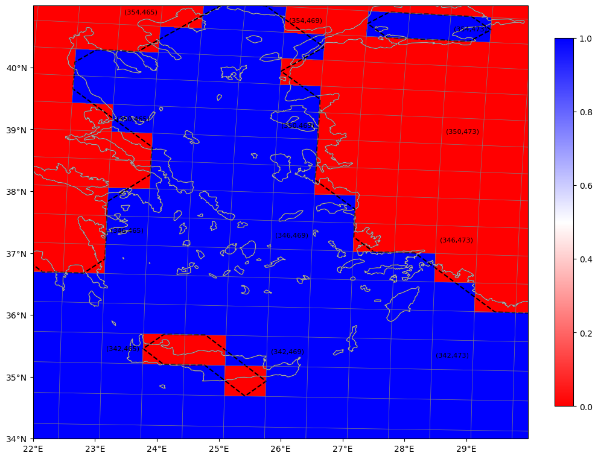
Bosphoris/Dardanelles#
lonbeg=25
lonend=30
latbeg=39
latend=42
map_mask(df_old,'ocn_frac',lonbeg,lonend,latbeg,latend,2)

df_new['mask'][355,473] = 1
df_new['mask'][354,470] = 1
df_new['mask'][353,470] = 1
map_mask(df_new,'mask',lonbeg,lonend,latbeg,latend)
Western Atlantic#
G. of St. Lawrence#
lonbeg=-70
lonend=-61
latbeg=46
latend=51
map_mask(df_old,'ocn_frac',lonbeg,lonend,latbeg,latend,2)
df_new['mask'][370,328]=0
df_new['mask'][371,329:331]=0
map_mask(df_new,'mask',lonbeg,lonend,latbeg,latend,3)
Bay of Fundy / Prince Edward Island#
lonbeg=-66
lonend=-60
latbeg=43
latend=48
map_mask(df_old,'ocn_frac',lonbeg,lonend,latbeg,latend,3)
df_new['mask'][364:366,335]=0
df_new['mask'][363,336]=0
map_mask(df_new,'mask',lonbeg,lonend,latbeg,latend,3)
Long Island Sound#
lonbeg=-74
lonend=-69
latbeg=40
latend=43
map_mask(df_old,'ocn_frac',lonbeg,lonend,latbeg,latend,2)
df_new['mask'][354,325]=0
df_new['mask'][353,321:323]=0
map_mask(df_new,'mask',lonbeg,lonend,latbeg,latend,3)
Delaware / Chesapeake Bays#
lonbeg=-77
lonend=-74
latbeg=36
latend=40
map_mask(df_old,'ocn_frac',lonbeg,lonend,latbeg,latend,2)
df_new['mask'][344:348,316]=0
map_mask(df_new,'mask',lonbeg,lonend,latbeg,latend,3)
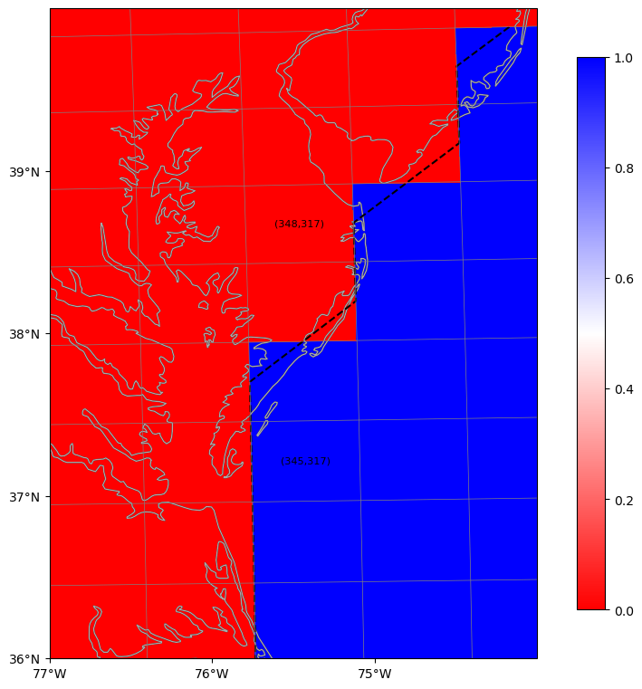
Florida Straits / Bahamas#
lonbeg=-82
lonend=-72
latbeg=20
latend=28
map_mask(df_old,'ocn_frac',lonbeg,lonend,latbeg,latend,4)
map_mask(df_new,'mask',lonbeg,lonend,latbeg,latend,4)
Puerto Rico / Windward / Mona Passage#
lonbeg=-75
lonend=-65
latbeg=17
latend=22
map_mask(df_old,'ocn_frac',lonbeg,lonend,latbeg,latend,2)
df_new['mask'][312,320:322]=0
map_mask(df_new,'mask',lonbeg,lonend,latbeg,latend,4)
G Mexico / Matagorda Bay#
lonbeg=-98
lonend=-95
latbeg=26
latend=29
map_mask(df_old,'ocn_frac',lonbeg,lonend,latbeg,latend,2)
df_new['mask'][326,284]=0
map_mask(df_new,'mask',lonbeg,lonend,latbeg,latend,2)
G Mexico / S. Padre Island#
lonbeg=-99
lonend=-96
latbeg=23.5
latend=27
map_mask(df_old,'ocn_frac',lonbeg,lonend,latbeg,latend,3)
map_mask(df_new,'mask',lonbeg,lonend,latbeg,latend,3)
G Mexico / Campeche#
lonbeg=-92.5
lonend=-90
latbeg=18
latend=20
map_mask(df_old,'ocn_frac',lonbeg,lonend,latbeg,latend,3)
map_mask(df_new,'mask',lonbeg,lonend,latbeg,latend,3)
Yucatan Channel#
lonbeg=-88
lonend=-82
latbeg=20
latend=25
map_mask(df_old,'ocn_frac',lonbeg,lonend,latbeg,latend,2)
df_new['mask'][318,303]=0
map_mask(df_new,'mask',lonbeg,lonend,latbeg,latend,4)
Caribbean / Belize#
lonbeg=-89
lonend=-85
latbeg=15
latend=19
map_mask(df_old,'ocn_frac',lonbeg,lonend,latbeg,latend,3)
map_mask(df_new,'mask',lonbeg,lonend,latbeg,latend,3)
Caribbean / Honduras#
lonbeg=-85
lonend=-83
latbeg=14
latend=16
map_mask(df_old,'ocn_frac',lonbeg,lonend,latbeg,latend,3)
map_mask(df_new,'mask',lonbeg,lonend,latbeg,latend,3)
Caribbean / Bocas del Toro#
lonbeg=-83
lonend=-81
latbeg=8
latend=10
map_mask(df_old,'ocn_frac',lonbeg,lonend,latbeg,latend,3)
map_mask(df_new,'mask',lonbeg,lonend,latbeg,latend,3)
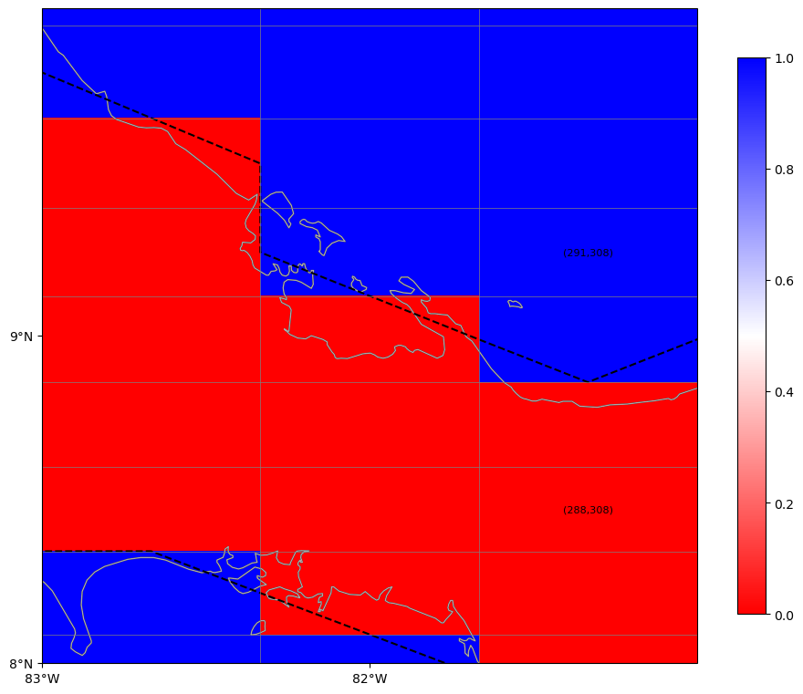
G. Venezuela / Lake Maracaibo / Aruba#
lonbeg=-73
lonend=-68
latbeg=9
latend=13
map_mask(df_old,'ocn_frac',lonbeg,lonend,latbeg,latend,3)
map_mask(df_new,'mask',lonbeg,lonend,latbeg,latend,3)
Amazon River Mouth#
lonbeg=-52
lonend=-46
latbeg=-2
latend=2
map_mask(df_old,'ocn_frac',lonbeg,lonend,latbeg,latend,3)
map_mask(df_new,'mask',lonbeg,lonend,latbeg,latend,3)
Porto Alegre#
lonbeg=-54
lonend=-49
latbeg=-34
latend=-29
map_mask(df_old,'ocn_frac',lonbeg,lonend,latbeg,latend,2)

df_new['mask'][175,353]=0
df_new['mask'][174,352]=0
df_new['mask'][172,351]=0
map_mask(df_new,'mask',lonbeg,lonend,latbeg,latend,3)
Puerto Madryn#
lonbeg=-66
lonend=-63
latbeg=-44
latend=-41
map_mask(df_old,'ocn_frac',lonbeg,lonend,latbeg,latend,2)
df_new['mask'][153,333]=0
map_mask(df_new,'mask',lonbeg,lonend,latbeg,latend,2)
Tierra Del Fuego (E)#
lonbeg=-69.5
lonend=-65
latbeg=-57
latend=-52.5
map_mask(df_old,'ocn_frac',lonbeg,lonend,latbeg,latend,3)
map_mask(df_new,'mask',lonbeg,lonend,latbeg,latend,3)
Tierra Del Fuego (W)#
lonbeg=-72
lonend=-67
latbeg=-57
latend=-51
map_mask(df_old,'ocn_frac',lonbeg,lonend,latbeg,latend)
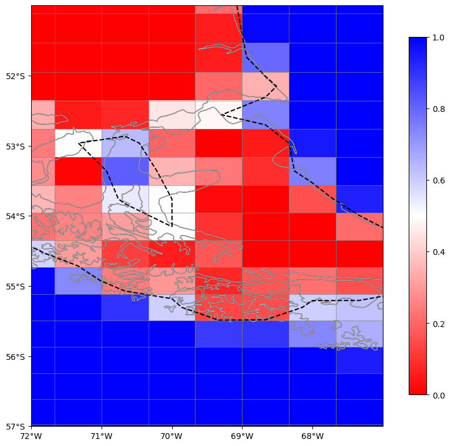
map_mask(df_new,'mask',lonbeg,lonend,latbeg,latend)
Indian Ocean#
Red Sea / Bab al-Mandab St.#
lonbeg=41
lonend=46
latbeg=10
latend=15
map_mask(df_old,'ocn_frac',lonbeg,lonend,latbeg,latend,2)
df_new['mask'][302,494:497]=1
df_new['mask'][300:305,495]=1
map_mask(df_new,'mask',lonbeg,lonend,latbeg,latend,2)
Northern Red Sea#
lonbeg=32
lonend=36
latbeg=27
latend=30
map_mask(df_old,'ocn_frac',lonbeg,lonend,latbeg,latend,3)
map_mask(df_new,'mask',lonbeg,lonend,latbeg,latend,3)
Persian Gulf / St. of Hormuz#
lonbeg=53
lonend=60
latbeg=23
latend=28
map_mask(df_old,'ocn_frac',lonbeg,lonend,latbeg,latend,3)
df_new['mask'][324,514]=1
df_new['mask'][325,516]=1
map_mask(df_new,'mask',lonbeg,lonend,latbeg,latend,3)
Ganges Brahmaputra Delta#
lonbeg=-270
lonend=-265
latbeg=19
latend=23
map_mask(df_old,'ocn_frac',lonbeg,lonend,latbeg,latend,3)
map_mask(df_new,'mask',lonbeg,lonend,latbeg,latend,3)
Indonesian Throghflow#
Indonesia (SW) / Lombok St#
lonbeg=-248
lonend=-242
latbeg=-10
latend=-5
map_mask(df_old,'ocn_frac',lonbeg,lonend,latbeg,latend,2)
df_new['mask'][219,64]=1
df_new['mask'][223,61]=1
map_mask(df_new,'mask',lonbeg,lonend,latbeg,latend,2)
Indonesia (S) / Sumba#
lonbeg=-243
lonend=-238
latbeg=-11
latend=-6
map_mask(df_old,'ocn_frac',lonbeg,lonend,latbeg,latend)
map_mask(df_new,'mask',lonbeg,lonend,latbeg,latend)
Indonesia (SE) / Timor#
lonbeg=-238
lonend=-233
latbeg=-11
latend=-7
map_mask(df_old,'ocn_frac',lonbeg,lonend,latbeg,latend,3)
map_mask(df_new,'mask',lonbeg,lonend,latbeg,latend)
Sulawesi#
lonbeg=-242
lonend=-234
latbeg=-6
latend=2
map_mask(df_old,'ocn_frac',lonbeg,lonend,latbeg,latend,4)
df_new['mask'][251:257,70]=0
df_new['mask'][236,74]=0
map_mask(df_new,'mask',lonbeg,lonend,latbeg,latend,4)
Pacific Islands#
Hawaii#
lonbeg=-161
lonend=-154
latbeg=18
latend=23
map_mask(df_old,'ocn_frac',lonbeg,lonend,latbeg,latend,2)
df_new['mask'][314,196]=0
df_new['mask'][316,195]=0
df_new['mask'][317,193]=0
df_new['mask'][318,191]=0
map_mask(df_new,'mask',lonbeg,lonend,latbeg,latend,3)
Galapagos#
lonbeg=-93
lonend=-88
latbeg=-2
latend=2
map_mask(df_old,'ocn_frac',lonbeg,lonend,latbeg,latend,2)
df_new['mask'][250:255,293]=0
df_new['mask'][251,294]=0
df_new['mask'][253,294]=0
df_new['mask'][251,296]=0
map_mask(df_new,'mask',lonbeg,lonend,latbeg,latend,2)
Eastern Pacific Ocean#
SE Alaska Glacier Bay#
lonbeg=-137.5
lonend=-133.5
latbeg=56
latend=59.5
map_mask(df_old,'ocn_frac',lonbeg,lonend,latbeg,latend,3)
map_mask(df_new,'mask',lonbeg,lonend,latbeg,latend,3)
Alaska / Ketchican#
lonbeg=-134
lonend=-130
latbeg=53.5
latend=57.5
map_mask(df_old,'ocn_frac',lonbeg,lonend,latbeg,latend,3)
map_mask(df_new,'mask',lonbeg,lonend,latbeg,latend,3)
N. Vancouver Island#
lonbeg=-129.5
lonend=-125.5
latbeg=49
latend=53
map_mask(df_old,'ocn_frac',lonbeg,lonend,latbeg,latend,3)
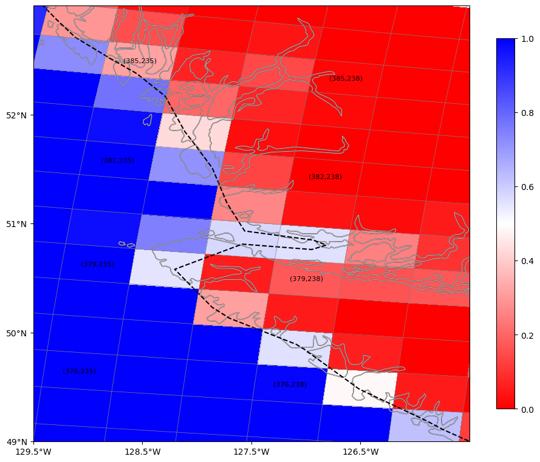
df_new['mask'][380,237:239]=0
map_mask(df_new,'mask',lonbeg,lonend,latbeg,latend,3)
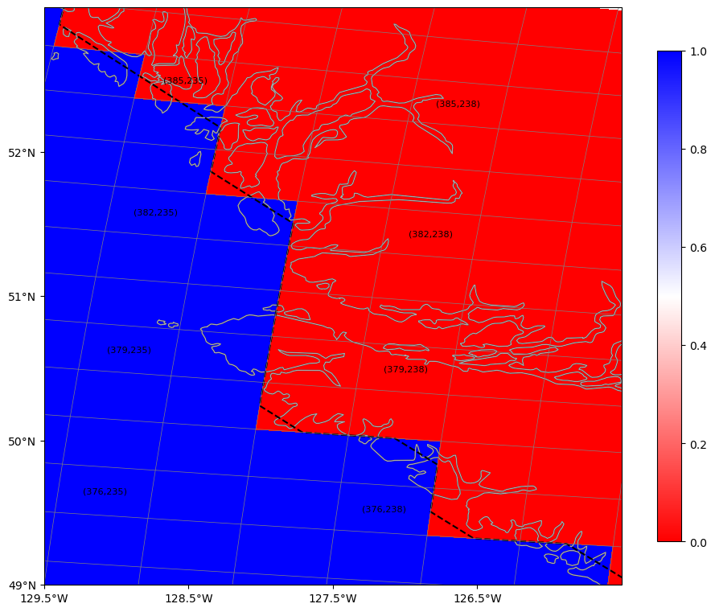
St. Juan de Fuca / Puget Sound#
lonbeg=-125.5
lonend=-121.5
latbeg=47
latend=51
map_mask(df_old,'ocn_frac',lonbeg,lonend,latbeg,latend,2)
df_new['mask'][373,244]=0
map_mask(df_new,'mask',lonbeg,lonend,latbeg,latend,2)
Columbia River#
lonbeg=-125
lonend=-123
latbeg=45.5
latend=47.5
map_mask(df_old,'ocn_frac',lonbeg,lonend,latbeg,latend,3)
map_mask(df_new,'mask',lonbeg,lonend,latbeg,latend,3)
Baja California / Isla de Cedros#
lonbeg=-116
lonend=-113
latbeg=26
latend=29
map_mask(df_old,'ocn_frac',lonbeg,lonend,latbeg,latend,5)
map_mask(df_new,'mask',lonbeg,lonend,latbeg,latend,5)
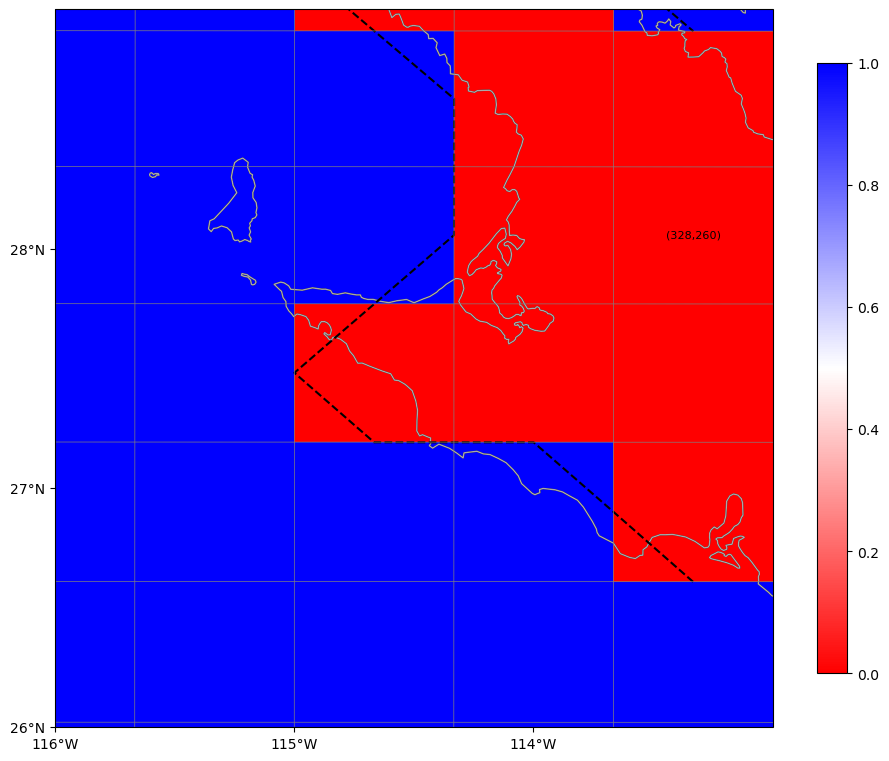
Costa Rica#
lonbeg=-86
lonend=-82
latbeg=7
latend=11
map_mask(df_old,'ocn_frac',lonbeg,lonend,latbeg,latend,8)

map_mask(df_new,'mask',lonbeg,lonend,latbeg,latend)
Panama#
lonbeg=-82
lonend=-78
latbeg=6
latend=10
map_mask(df_old,'ocn_frac',lonbeg,lonend,latbeg,latend,3)
map_mask(df_new,'mask',lonbeg,lonend,latbeg,latend)

Chile / Corcovado#
lonbeg=-76
lonend=-72
latbeg=-46
latend=-41.5
map_mask(df_old,'ocn_frac',lonbeg,lonend,latbeg,latend,3)
map_mask(df_new,'mask',lonbeg,lonend,latbeg,latend,3)
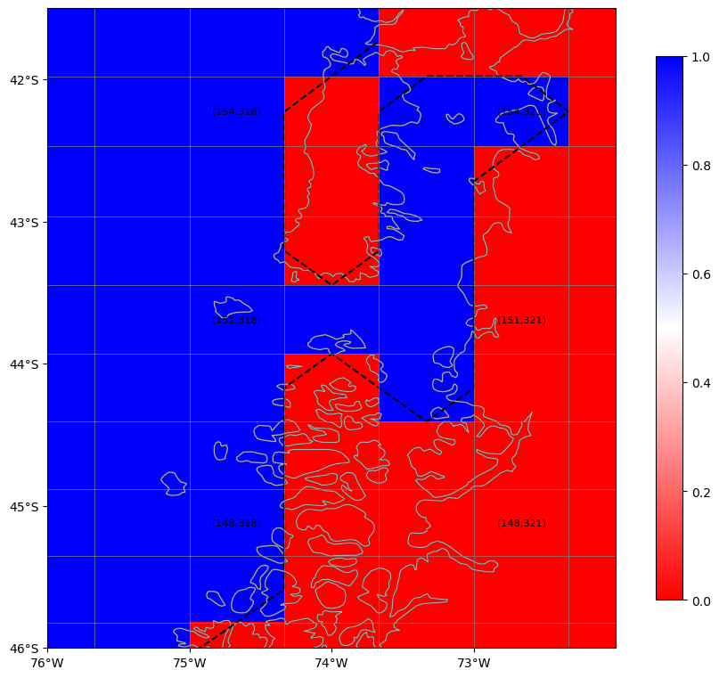
Chile / Tierra del Fuego (N)#
lonbeg=-76
lonend=-72
latbeg=-52
latend=-47
map_mask(df_old,'ocn_frac',lonbeg,lonend,latbeg,latend,3)
map_mask(df_new,'mask',lonbeg,lonend,latbeg,latend,3)
Chile / Tierra del Fuego (S)#
lonbeg=-75.5
lonend=-71.5
latbeg=-55
latend=-51.5
map_mask(df_old,'ocn_frac',lonbeg,lonend,latbeg,latend,3)
map_mask(df_new,'mask',lonbeg,lonend,latbeg,latend,3)
Western Pacific Ocean#
Japan (Kyushu)#
lonbeg=-233
lonend=-224
latbeg=30
latend=38
map_mask(df_old,'ocn_frac',lonbeg,lonend,latbeg,latend,3)
df_new['mask'][337,88]=0
df_new['mask'][339,92]=0
map_mask(df_new,'mask',lonbeg,lonend,latbeg,latend,3)
Alaskan Arctic#
Bering St#
lonbeg=-170
lonend=-165
latbeg=64
latend=67
map_mask(df_old,'ocn_frac',lonbeg,lonend,latbeg,latend,4)
map_mask(df_new,'mask',lonbeg,lonend,latbeg,latend,4)
Cape Krusenstern#
lonbeg=-166
lonend=-158
latbeg=63
latend=69
map_mask(df_old,'ocn_frac',lonbeg,lonend,latbeg,latend,4)
map_mask(df_new,'mask',lonbeg,lonend,latbeg,latend,4)
Mackenzie River#
lonbeg=-137
lonend=-133
latbeg=67
latend=70
map_mask(df_old,'ocn_frac',lonbeg,lonend,latbeg,latend,4)
map_mask(df_new,'mask',lonbeg,lonend,latbeg,latend,4)
Canadian Arctic#
fig,ax=plt.subplots(figsize=(12,12))
ax.pcolormesh(df_new['geolonb'],df_new['geolatb'],df_new['mask'],vmin=0,vmax=1);
ax.set_xlim(-130,-60);
ax.set_ylim(60,87);
ax.grid(True)
Eskimo Lakes#
lonbeg=-132
lonend=-129
latbeg=68.5
latend=71
map_mask(df_old,'ocn_frac',lonbeg,lonend,latbeg,latend,3)
map_mask(df_new,'mask',lonbeg,lonend,latbeg,latend,3)
NW Territories / Paulatuk#
lonbeg=-126.5
lonend=-123.5
latbeg=68
latend=71
map_mask(df_old,'ocn_frac',lonbeg,lonend,latbeg,latend,3)
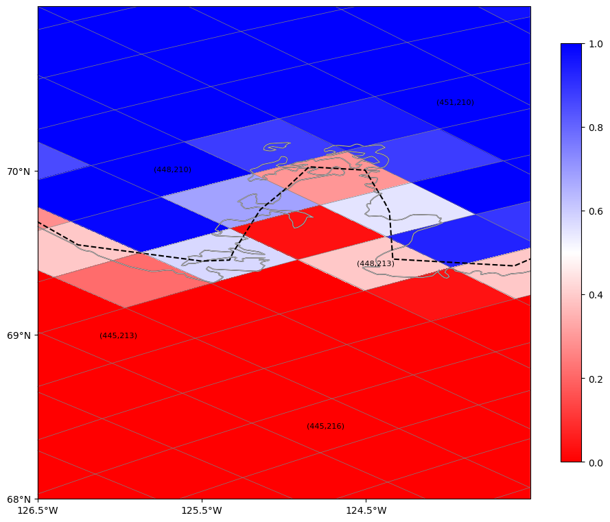
map_mask(df_new,'mask',lonbeg,lonend,latbeg,latend,3)
Victoria Island / Banks Island#
lonbeg=-121
lonend=-113
latbeg=68
latend=76
map_mask(df_old,'ocn_frac',lonbeg,lonend,latbeg,latend,2)
df_new['mask'][459,206]=1
df_new['mask'][460,208]=1
df_new['mask'][461,211]=0
df_new['mask'][464,216]=0
df_new['mask'][459,222]=1
df_new['mask'][461,221]=1
map_mask(df_new,'mask',lonbeg,lonend,latbeg,latend,2)
S Victoria Island#
lonbeg=-111
lonend=-104
latbeg=66
latend=73
map_mask(df_old,'ocn_frac',lonbeg,lonend,latbeg,latend,3)
df_new['mask'][474,229]=1
df_new['mask'][475,228]=1
df_new['mask'][479,225]=1
df_new['mask'][475,312]=1
df_new['mask'][474,314]=1
df_new['mask'][473,313]=1
df_new['mask'][473,310]=0
df_new['mask'][477,209]=0
map_mask(df_new,'mask',lonbeg,lonend,latbeg,latend,3)
E Victoria Island#
lonbeg=-105
lonend=-99
latbeg=68
latend=72
map_mask(df_old,'ocn_frac',lonbeg,lonend,latbeg,latend,3)
map_mask(df_new,'mask',lonbeg,lonend,latbeg,latend,5)
Goja Havn#
lonbeg=-98
lonend=-92
latbeg=67
latend=73
map_mask(df_old,'ocn_frac',lonbeg,lonend,latbeg,latend,2)
df_new['mask'][456:458,321]=1
df_new['mask'][463,333]=1
df_new['mask'][461,328]=1
df_new['mask'][456,320:323]=0
map_mask(df_new,'mask',lonbeg,lonend,latbeg,latend,2)
NW Axel Heiberg Island#
lonbeg=-98
lonend=-92
latbeg=77
latend=83
map_mask(df_old,'ocn_frac',lonbeg,lonend,latbeg,latend,2)
map_mask(df_new,'mask',lonbeg,lonend,latbeg,latend,2)

N Ellesmere Island#
lonbeg=-91
lonend=-83
latbeg=77
latend=83
map_mask(df_old,'ocn_frac',lonbeg,lonend,latbeg,latend,2)

df_new['mask'][469,366:368]=0
map_mask(df_new,'mask',lonbeg,lonend,latbeg,latend,2)
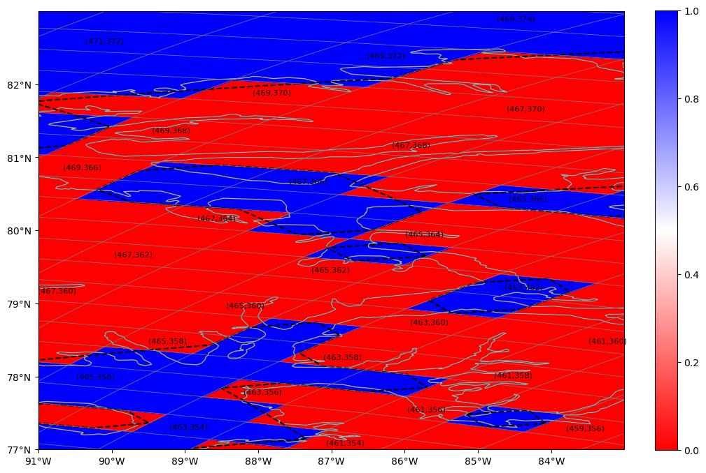
S Ellesmere Island#
lonbeg=-88
lonend=-79
latbeg=72
latend=80
map_mask(df_old,'ocn_frac',lonbeg,lonend,latbeg,latend,2)
df_new['mask'][456,351]=1
df_new['mask'][455,352]=1
df_new['mask'][455,354]=1
df_new['mask'][463,357]=0
map_mask(df_new,'mask',lonbeg,lonend,latbeg,latend,2)
Northern Robeson Channel (Greenland)#
lonbeg=-66
lonend=-54
latbeg=80
latend=83.5
map_mask(df_old,'ocn_frac',lonbeg,lonend,latbeg,latend,2)
df_new['mask'][458,378:381]=1
df_new['mask'][460,379]=1
df_new['mask'][457,376]=0
map_mask(df_new,'mask',lonbeg,lonend,latbeg,latend,2)
Central Robeson Channel (Greenland)#
lonbeg=-73
lonend=-64
latbeg=77
latend=83
map_mask(df_old,'ocn_frac',lonbeg,lonend,latbeg,latend,2)
df_new['mask'][457,372:374]=1
df_new['mask'][458,370:372]=1
df_new['mask'][459,372:376]=1
map_mask(df_new,'mask',lonbeg,lonend,latbeg,latend,2)
fig,ax=plt.subplots(figsize=(12,12))
ax.pcolormesh(df_new['geolonb'],df_new['geolatb'],df_new['mask'],vmin=0,vmax=1);
ax.set_xlim(-130,-59);
ax.set_ylim(60,87);
ax.grid(True)
Baffin Bay / Labrador Sea#
fig,ax=plt.subplots(figsize=(12,12))
ax.pcolormesh(df_new['geolonb'],df_new['geolatb'],df_new['mask'],vmin=0,vmax=1);
ax.set_xlim(-85,-40);
ax.set_ylim(57,84);
ax.grid(True)
S Robeson Channel#
lonbeg=-77
lonend=-67
latbeg=73
latend=79
map_mask(df_old,'ocn_frac',lonbeg,lonend,latbeg,latend,2)
df_new['mask'][451,362]=1
df_new['mask'][456,362]=1
map_mask(df_new,'mask',lonbeg,lonend,latbeg,latend,4)
S. Baffin Island#
lonbeg=-68.5
lonend=-61.5
latbeg=62
latend=69
map_mask(df_old,'ocn_frac',lonbeg,lonend,latbeg,latend,2)
df_new['mask'][413:415,343]=1
df_new['mask'][409,339]=0
map_mask(df_new,'mask',lonbeg,lonend,latbeg,latend,2)
W Greenland / Nuugaatslaq#
lonbeg=-58
lonend=-49
latbeg=64
latend=73
map_mask(df_old,'ocn_frac',lonbeg,lonend,latbeg,latend,2)
df_new['mask'][426,364]=0
df_new['mask'][428,365]=0
df_new['mask'][422,364]=0
map_mask(df_new,'mask',lonbeg,lonend,latbeg,latend,2)
Greenland / Norwegian Sea#
fig,ax=plt.subplots(figsize=(12,12))
ax.pcolormesh(df_new['geolonb'],df_new['geolatb'],df_new['mask'],vmin=0,vmax=1);
ax.set_xlim(-50,25);
ax.set_ylim(57,84);
ax.grid(True)
N Greenland#
lonbeg=-55
lonend=-45
latbeg=80
latend=84
map_mask(df_old,'ocn_frac',lonbeg,lonend,latbeg,latend,4)
map_mask(df_new,'mask',lonbeg,lonend,latbeg,latend,4)
NE Greenland#
lonbeg=-25
lonend=-17
latbeg=78
latend=84
map_mask(df_old,'ocn_frac',lonbeg,lonend,latbeg,latend,2)
df_new['mask'][455,396]=1
df_new['mask'][452,397]=1
map_mask(df_new,'mask',lonbeg,lonend,latbeg,latend,2)
E Greenland#
lonbeg=-28
lonend=-20
latbeg=68
latend=76
map_mask(df_old,'ocn_frac',lonbeg,lonend,latbeg,latend,2)
df_new['mask'][425,394]=0
map_mask(df_new,'mask',lonbeg,lonend,latbeg,latend,2)
Svalbard#
lonbeg=10
lonend=22
latbeg=75
latend=81
map_mask(df_old,'ocn_frac',lonbeg,lonend,latbeg,latend,2)
df_new['mask'][452,419]=0
map_mask(df_new,'mask',lonbeg,lonend,latbeg,latend,2)
Iceland#
lonbeg=-25
lonend=-13
latbeg=60
latend=70
map_mask(df_old,'ocn_frac',lonbeg,lonend,latbeg,latend,2)
df_new['mask'][407,397]=0
df_new['mask'][408,398]=1
df_new['mask'][406,395]=0
map_mask(df_new,'mask',lonbeg,lonend,latbeg,latend,2)
Norway /Narvik#
lonbeg=11
lonend=19
latbeg=66
latend=72
map_mask(df_old,'ocn_frac',lonbeg,lonend,latbeg,latend,4)
map_mask(df_new,'mask',lonbeg,lonend,latbeg,latend,4)
Russian Arctic#
fig,ax=plt.subplots(ncols=2,figsize=(12,8))
ax[0].pcolormesh(df_new['geolonb'],df_new['geolatb'],df_new['mask'],vmin=0,vmax=1);
ax[0].set_xlim(10,73);
ax[0].set_ylim(57,84);
ax[0].grid(True)
ax[1].pcolormesh(df_new['geolonb'],df_new['geolatb'],df_new['mask'],vmin=0,vmax=1);
ax[1].set_xlim(-287,-170);
ax[1].set_ylim(57,84);
ax[1].grid(True)
White Sea#
lonbeg=32
lonend=45
latbeg=63
latend=71
map_mask(df_old,'ocn_frac',lonbeg,lonend,latbeg,latend,3)
df_new['mask'][435:438,462]=1
df_new['mask'][431,455]=0
map_mask(df_new,'mask',lonbeg,lonend,latbeg,latend,3)
Kara Sea (W)#
lonbeg=65
lonend=74
latbeg=65
latend=74
map_mask(df_old,'ocn_frac',lonbeg,lonend,latbeg,latend,2)
df_new['mask'][473,469]=0
df_new['mask'][476,476]=0
df_new['mask'][479,455:463]=1
map_mask(df_new,'mask',lonbeg,lonend,latbeg,latend,2)
Kara Sea (E)#
lonbeg=-289
lonend=-275
latbeg=66
latend=74
map_mask(df_old,'ocn_frac',lonbeg,lonend,latbeg,latend,2)
df_new['mask'][479,80]=1
df_new['mask'][479,70]=1
df_new['mask'][478,77]=0
df_new['mask'][477,72]=0
df_new['mask'][476,82]=0
df_new['mask'][473,84]=0
df_new['mask'][471,86]=1
df_new['mask'][471,83]=0
map_mask(df_new,'mask',lonbeg,lonend,latbeg,latend,2)
Laptev Sea (W)#
lonbeg=-255
lonend=-245
latbeg=70
latend=78
map_mask(df_old,'ocn_frac',lonbeg,lonend,latbeg,latend,2)
df_new['mask'][446,101]=0
df_new['mask'][448,102]=0
map_mask(df_new,'mask',lonbeg,lonend,latbeg,latend,2)
Antarctica#
Byrd Land#
lonbeg=-143
lonend=-138
latbeg=-76
latend=-74
map_mask(df_old,'ocn_frac',lonbeg,lonend,latbeg,latend,2)
df_new['mask'][47,219]=0 # Added 4/4/2023
map_mask(df_new,'mask',lonbeg,lonend,latbeg,latend,2)
Adelie Land#
lonbeg=-217
lonend=-207
latbeg=-70
latend=-65
map_mask(df_old,'ocn_frac',lonbeg,lonend,latbeg,latend,2)
df_new['mask'][87,107]=0 # Added 4/4/2023
df_new['mask'][81,117]=0 # Added 4/4/2023
map_mask(df_new,'mask',lonbeg,lonend,latbeg,latend,2)

Thwaites Glacier#
lonbeg=-110
lonend=-105
latbeg=-76
latend=-74
map_mask(df_old,'ocn_frac',lonbeg,lonend,latbeg,latend,2)
map_mask(df_new,'mask',lonbeg,lonend,latbeg,latend,2)
Pine Island Glacier#
lonbeg=-105
lonend=-100
latbeg=-76
latend=-72
map_mask(df_old,'ocn_frac',lonbeg,lonend,latbeg,latend,2)
df_new['mask'][58,276]=0
map_mask(df_new,'mask',lonbeg,lonend,latbeg,latend,2)
West Antarctica / Smyley Island#
lonbeg=-82
lonend=-77
latbeg=-75
latend=-72
map_mask(df_old,'ocn_frac',lonbeg,lonend,latbeg,latend,2)
df_new['mask'][60,311]=0
map_mask(df_new,'mask',lonbeg,lonend,latbeg,latend,2)
West Antarctica (2)#
lonbeg=-77
lonend=-66
latbeg=-74
latend=-66
map_mask(df_old,'ocn_frac',lonbeg,lonend,latbeg,latend,2)
df_new['mask'][60,321]=0
df_new['mask'][70,320]=0
df_new['mask'][76,321]=0
df_new['mask'][77,326]=0
df_new['mask'][65,320]= 0 # added 4/4/2023
map_mask(df_new,'mask',lonbeg,lonend,latbeg,latend,2)
Antarctic Pennisula (W)#
lonbeg=-70
lonend=-62
latbeg=-70
latend=-63
map_mask(df_old,'ocn_frac',lonbeg,lonend,latbeg,latend,2)
df_new['mask'][87,331]=0
df_new['mask'][93:96,334]=0
map_mask(df_new,'mask',lonbeg,lonend,latbeg,latend,4)
Antarctic Pennisula (N)#
lonbeg=-63
lonend=-54
latbeg=-70
latend=-61
map_mask(df_old,'ocn_frac',lonbeg,lonend,latbeg,latend,2)
df_new['mask'][99,343]=0
df_new['mask'][100,345]=0
df_new['mask'][103,339:341]=0
df_new['mask'][104,342]=0
df_new['mask'][105,343]=0
df_new['mask'][77,338]=0
map_mask(df_new,'mask',lonbeg,lonend,latbeg,latend,4)
Maud Land#
lonbeg=0
lonend=10
latbeg=-74
latend=-68
map_mask(df_old,'ocn_frac',lonbeg,lonend,latbeg,latend,2)
df_new['mask'][74,437]=0 # Added 4/4/2023
map_mask(df_new,'mask',lonbeg,lonend,latbeg,latend,4)
Maud Land (2)#
lonbeg=15
lonend=25
latbeg=-74
latend=-68
map_mask(df_old,'ocn_frac',lonbeg,lonend,latbeg,latend,2)

df_new['mask'][74,463]=0 # Added 4/4/2023
map_mask(df_new,'mask',lonbeg,lonend,latbeg,latend,2)
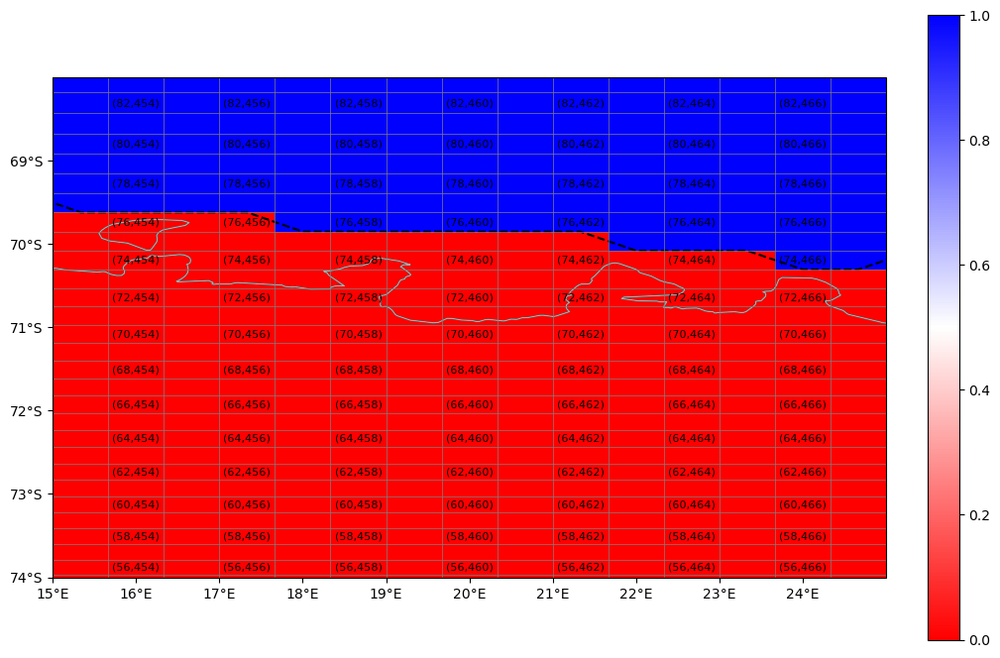
Lake Fill and Output#
print('# hand edits = ',xr.where(df_new['mask'] != df_old['mask'],1,0).sum().values)
df_new['hand_edits'] = df_new['mask']-df_old['mask']
df_new['hand_edits'].plot()
# hand edits = 155
<matplotlib.collections.QuadMesh at 0x150d2c284b50>
df_new['mask'].plot()
<matplotlib.collections.QuadMesh at 0x150d2c251750>
%%time
iseed=5
jseed=200
seed = (jseed,iseed)
print('seed point @',df_old['geolon'][jseed,iseed].values,
df_old['geolat'][jseed,iseed].values,
' mask=',df_new['mask'][jseed,iseed].values)
filled_mask = mask_flood(df_new['mask'],seed)
seed point @ -283.33333333333326 -15.96473328390503 mask= 1
CPU times: user 224 ms, sys: 16.5 ms, total: 241 ms
Wall time: 717 ms
df_new['mask'].plot()
<matplotlib.collections.QuadMesh at 0x150d27623160>
df_new['orig_mask'] = df_old['mask'].copy()
df_new['mask'][:,:] = filled_mask
today = date.today()
ss = 'Hand Edit + Lake Fill ' + today.strftime("%m/%d/%Y")
print(ss)
df_new.attrs['Edit History'] = ss
Hand Edit + Lake Fill 02/16/2024
df_new
<xarray.Dataset>
Dimensions: (lonh: 540, lath: 480, lonq: 541, latq: 481)
Coordinates:
* lonh (lonh) float64 -286.7 -286.0 -285.3 -284.7 ... 71.33 72.0 72.67
* lath (lath) float64 -81.56 -81.46 -81.36 -81.26 ... 89.33 89.6 89.86
* lonq (lonq) float64 -287.0 -286.3 -285.7 -285.0 ... 71.67 72.33 73.0
* latq (latq) float64 -81.61 -81.51 -81.41 -81.31 ... 89.46 89.72 89.91
Data variables: (12/14)
geolon (lath, lonh) float64 ...
geolat (lath, lonh) float64 ...
geolonb (latq, lonq) float64 -287.0 -286.3 -285.7 ... 73.0 73.0 73.0
geolatb (latq, lonq) float64 -81.61 -81.61 -81.61 ... 50.19 50.04 50.0
z (lath, lonh) float32 ...
ocn_frac (lath, lonh) float32 ...
... ...
D_median (lath, lonh) float32 ...
D2_mean (lath, lonh) float32 ...
D_min (lath, lonh) float32 ...
D_max (lath, lonh) float32 ...
hand_edits (lath, lonh) int32 0 0 0 0 0 0 0 0 0 0 0 ... 0 0 0 0 0 0 0 0 0 0
orig_mask (lath, lonh) int32 0 0 0 0 0 0 0 0 0 0 0 ... 0 0 0 0 0 0 0 0 0 0
Attributes:
Description: Ocean Topography Statistics on MOM6 Grid
Creator: Frank Bryan (bryan@ucar.edu)
Created: 20240216
Generating Code: create_model_topo.f90
Model Grid Version: tx2_3v2
Source Topography Data: /glade/campaign/cgd/oce/datasets/obs/SRTM/SRTM15...
Edit History: Hand Edit + Lake Fill 02/16/2024print('# hand edits = ',xr.where(df_new['mask'] != df_old['mask'],1,0).sum().values)
df_new['hand_edits'] = df_new['mask']-df_old['mask']
df_new['hand_edits'].plot()
# hand edits = 846
<matplotlib.collections.QuadMesh at 0x150d27b42c50>
df_new['mask'].plot(robust=True)
<matplotlib.collections.QuadMesh at 0x150d2c135f00>

Output Mask#
path
'./'
df_new.to_netcdf(path+file_out)
Display Final Mask#
fig,ax=plt.subplots(figsize=(12,12))
ax.pcolormesh(df_new['geolonb'],df_new['geolatb'],df_new['mask'],vmin=0,vmax=1);
ax.set_xlim(df_new['lonh'][0],df_new['lonh'][0]+90.);
ax.set_ylim(0,90.);
ax.grid(True)
fig,ax=plt.subplots(figsize=(12,12))
ax.pcolormesh(df_new['geolonb'],df_new['geolatb'],df_new['mask'],vmin=0,vmax=1);
ax.set_xlim(df_new['lonh'][0]+90,df_new['lonh'][0]+180.);
ax.set_ylim(0,90.);
ax.grid(True)
fig,ax=plt.subplots(figsize=(12,12))
ax.pcolormesh(df_new['geolonb'],df_new['geolatb'],df_new['mask'],vmin=0,vmax=1);
ax.set_xlim(df_new['lonh'][0]+180,df_new['lonh'][0]+270.);
ax.set_ylim(0,90.);
ax.grid(True)
fig,ax=plt.subplots(figsize=(12,12))
ax.pcolormesh(df_new['geolonb'],df_new['geolatb'],df_new['mask'],vmin=0,vmax=1);
ax.set_xlim(df_new['lonh'][0]+270,df_new['lonh'][0]+360.);
ax.set_ylim(0,90.);
ax.grid(True)
fig,ax=plt.subplots(figsize=(12,12))
ax.pcolormesh(df_new['geolonb'],df_new['geolatb'],df_new['mask'],vmin=0,vmax=1);
ax.set_xlim(df_new['lonh'][0],df_new['lonh'][0]+90.);
ax.set_ylim(-80,10);
ax.grid(True)
fig,ax=plt.subplots(figsize=(12,12))
ax.pcolormesh(df_new['geolonb'],df_new['geolatb'],df_new['mask'],vmin=0,vmax=1);
ax.set_xlim(df_new['lonh'][0]+90,df_new['lonh'][0]+180.);
ax.set_ylim(-80,10);
ax.grid(True)
fig,ax=plt.subplots(figsize=(12,12))
ax.pcolormesh(df_new['geolonb'],df_new['geolatb'],df_new['mask'],vmin=0,vmax=1);
ax.set_xlim(df_new['lonh'][0]+180,df_new['lonh'][0]+270.);
ax.set_ylim(-80,10);
ax.grid(True)
fig,ax=plt.subplots(figsize=(12,12))
ax.pcolormesh(df_new['geolonb'],df_new['geolatb'],df_new['mask'],vmin=0,vmax=1);
ax.set_xlim(df_new['lonh'][0]+270,df_new['lonh'][0]+360.);
ax.set_ylim(-80,10);
ax.grid(True)
fig,ax=plt.subplots(figsize=(12,12))
ax.pcolormesh(df_new['geolonb'],df_new['geolatb'],df_new['mask'],vmin=0,vmax=1);
ax.set_xlim(-130,-60);
ax.set_ylim(60,87);
ax.grid(True)